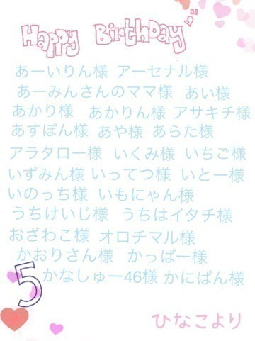
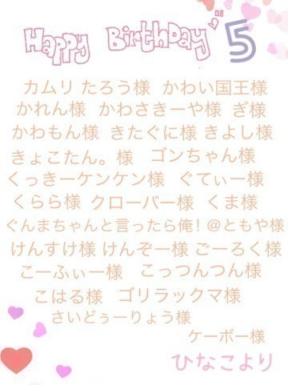
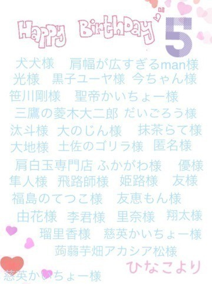

2015/0714Tue告知だけっ！パート2
みなさまこんばんは！
日奈子だよー٩(◦`꒳´◦)۶♪

ニット帽 見切れる
上の写真のお洋服、飛鳥ちゃんとたまたま色違いだったの！！！
今度2人で同時に着て写真のせるね♪

親子丼
NOGIBINGO!5 ♯1
▶︎未央奈とみり愛と企画を考えて
3人でプレゼンしました！
緊張したよ～！
NOGIROOMには
まあやさん、かりん、純奈、未央奈、日奈子の5人ででます！
仲良しなメンバーだったから、
ゆるゆるっと楽しかったです♪
開運音楽堂さん
▶︎7月18日 土曜日 AM4時30分～
TBSで放送されます！
とても緊張しましたがみさ先輩や
みさとんさん、杉山さんやみょんさんが
たくさん声をかけてくださり、
スタッフさん含め皆さん仲良しで
開運音楽堂ファミリーにいれてもらえました(｡>ω<｡)♪
次の週の25日には、アンダー曲も紹介してくださいました♪
2週連続でみさ先輩と出演しているので、ぜひみてください('∀`)
のぎえいご
▶︎7月19日 PM11時30分～
CS放送 TBSチャンネル1
第二回目は未央奈がゲストとして
来てくれました♪
一緒にわきゅわきゅ楽しかったです♪
みてねー(｡・・｡)
UTB Vol.233さん
▶︎7月23日(木)発売です！
季刊乃木坂以来のソログラビアでした！
あんな格好やあんな髪型で
いろいろなことをしたよ～♪
夏っぽくて、見るとワクワクして一緒におでかけしているような楽しい気分になると思います！
白石さん、生駒さん、日奈子のポスターがランダムではいっています♪
月刊B.L.T.さん
▶︎7月24日(金)発売です！
優里さんとのペアグラビア♪
先輩と2人でペアグラビアは初めてでしたが、優里さんとわちゃわちゃ、たくさんいたずらもして楽しかったです！！！
夏らしくいろいろなことをしたよ♪
優里さんとお祭りいきたいな～！
夏感が満載！！！！
ヤングアニマルさん
▶︎7月24日(金)発売です！
表紙&巻頭&巻末 16P
アンダー特集してもらいました♪
12シングル アンダーメンバー 全18名
圧倒的ボリューム！！！！！
BUBKAさん
▶︎7月30日発売！
塩アイスで取材してもらいました！
塩アイスの中での1つの夢が叶いました！いろいろな話しをして塩アイスを食べてと、ゆるくて楽しくて時々真剣な話しもして、すごく楽しかったです！
3人そろって同じ瞬間に一緒にいられたことに感動しました！(｡・・｡)笑
また、いつか塩アイスで何かできたらいいねって話してます♪
月刊Auditionさん
▶︎8月1日(土)発売です！
生駒さん、生田さん、真夏さん
みり愛、日奈子の4人で表紙とグラビアをやらせて頂きました！
普段着ないような衣装をきて新鮮でした٩(ˊᗜˋ*)و！
取材では、オーディションの話しやツアーの話しなどをしました！
撮影途中もさりげなく真夏さんをいじっている生駒さんも生田さんの3人のやりとりが可愛かったです♡
グラビアザテレビジョンさん
▶︎8月中に発売です！
未央奈と2人でペアグラビア！
半年ぶりの2回目！
お揃いのお洋服をきて、相原湖公園やさがみ湖に行ってきたよ～！
未央奈といると自然体でいられる！
だいすき！堀北コンビ！ぜひ、みてください！
メガネ赤札堂 presents 乃木坂46 永島聖羅のデリシャス・ミュージックさん
▶︎7月19日(日) 14時～15時30分
名古屋 ラグーナテンボス ラグナシアで公開録音イベントにまひろさんとゲストで登場します！
決まった時にらりんさんが
来てくれるの嬉しい♪楽しみだねー♪
って声をかけてくださり嬉しかったです♡お時間がある方はぜひ、みにきてね！
NACK5おに魂さん
▶︎7月20日(月)まいちゅんとゲストで出演します！今から緊張！！！
でも、すごくたのしみです(｡>ω<｡)
皆さんきいてください♪
それから、昨日の乃木坂showでじょしらく舞台裏密着映像が放送されました♪
みり愛たんが密着してくれたよ！
さりげなくみり愛ちゃんの頭の上ポンポンしてるの！
昨日の放送をみて、またじょしらくロスが襲ってきた。。。笑
じょしらくが終わってから家の車内では
じょしらくの曲が録音されているCDがながれてるの！！！
じょしらくのOPって聞くと
1日頭から離れないよね！
じょしらく舞台裏密着映像に寄せて
じょしらくチームごの舞台裏の話しを少しだけするね！！！
＊公演がある日はみんなで集合をはやめて確認事とか振りの確認とかしました！
学生時代の部活動みたいに
みんなで集まって作戦会議、たくさん考えて変更点とか気をつけるとことか意識することが大変だったけど、その時間はとても大切で楽しくていい思い出です♪
＊27日の公演の時にみさ先輩からのスイートポテトの差し入れが、、、♡
すーごく美味しかったです♡ありがとうございました♡

みさ先輩はお姉ちゃんみたいです♡
＊みんな自分の落語の日の楽屋で落ち着いてない感じが可愛かったです♡
日奈子は、緊張のあまりいつもより口数が減っていたけど、
ひめちゃん、能條さんはいつもよりたくさん話してた！
みさ先輩は緊張をほぐすためにお母さんに電話していて、可愛かった♡
あっしゅんは、常に泣きそうだった！笑
＊カツラをつける前のネット姿でしばらく楽屋にいるシュールさ。
きぐちゃん以外のネットは黒色だったから、黒豆みたいだった！！！
きぐちゃんは肌色だったので、
本物の小坊主みたいで
ここぞとばかりにネット姿の時はいつもより多めにいたずらしていました♪笑
＊そのネット姿で、舞台の前日にお話の半分のところまで場当たり。
宝くじのお話しのときの
相手を指差して疑いに行くとき
さすがにみんなネット姿だったから
笑っちゃってそれもいい思い出です！笑
＊本番直前でのハイタッチと背中叩きで気合いいれ。
本番直前で毎回、みんなでハイタッチをして背中を叩きあって気合いいれてました！
まだまだたくさんあるけど、
全部全部いい思い出です♡
前回のブログや前々回のブログのコメントじょしらくのことがたくさん書いてあって嬉しかったです！！！
みり愛とあっしゅんと伊織で
カキ氷食べに行く約束してるの～！
オススメのカキ氷屋さん
教えてください！
今日はこのへんで！
おやすみなさい(｡ρω-｡)
2015/07/14 00:24｜個別ページ｜コメント(1045)
2015/0709Thu公平と不公平
みなさまこんばんは！
日奈子だよー٩(◦`꒳´◦)۶♪

衣装できたよ～♪
今日はずっと、どうやって書こうか迷っていたじょしらくのこと！
少々長くなってるけど、最後まで読んでもらえたら嬉しいです！
最初に、舞台をやる。と聞いた時、
昨年のプリンシパルのことを思い出して正直怖かったです。
舞台の上からの景色を思い出して
その景色は誰も私を見てくれていない。お客さんの席に向かって、声を発しても
その私の気持ちは誰にも受け止められず、その言葉が自分に返ってきて、プレッシャーになって。。。っていう、勝手に孤独をつくってどんどんマイナスになっていました。
今はプリンシパルを終えて
そういう経験も成長するには必要だし、気持ちも強くなりました！
それでもやっぱり、
演技という舞台が怖かったです。
じょしらくもオーディションで選ぶと聞いて、尚更怖かったです。
でも、マイナスな考え方ばかりしても何にもならないし
舞台への恐怖心を克服したい！と思いました。
そう思って挑んだオーディション。
15人の中の1人に選んでもらえて、
変わりたい！と思っていたから嬉しかったけど、
素直な気持ちを話すと
選ばれた瞬間はすごく複雑な気持ちになりました。
一つも自信なかったし、
私のどこがよくて選んでもらったのかわからなかったからです。
でも、それは自分で考えて自分で見つけていこうって思って
一生懸命になって
私なりのきぐちゃんになろうって
お稽古をしていました！
きぐちゃんは、性格もセリフも
他のキャラクターとの関係性も
私と似ているところがあって
演じながら共感するところがたくさんあって、すごく楽しんでわくわくしながら演じられました！
千秋楽を終えて言われた
川尻さんをはじめスタッフさんからの言葉をいつでも胸にとめて、また次一緒にお仕事ができる時が来た時に、成長したね～って
言ってもらえるように、これからも頑張っていきます！
じょしらくのおかげで
私は前よりも自分に自信が持てるようになって成長できました。
こんなにも素敵で
こんなにも楽しくて
一生この時が終わらないでなんて思うと思わなかったです。
でも、スタッフさんにこの舞台を終わりにしないと皆んな次の舞台にたてない。って
言われて、背筋がピリッとしました。
それだけ、じょしらくは
私の中でとても貴重で大切な経験でした。
ファンの方にも
1年でこんなに成長したんだね！って思ってもらえるように、
このことを目標の中の1つにいれて
頑張りました！
どうだったかな？。。。
もちろん、まだまだ足りてないところがたくさんあるけど
それでも少しは成長したね！って褒められたいな～(｡-_-｡)♪笑
最後の舞台が終わって
最後のMCの時に言った
1年前の舞台からの光景と
今たっている舞台からの光景は
本当に違いました。
舞台の上からお客さんの席の後ろの後ろまで鮮明にみえて、お客さん一人一人と目を合わせられた気がします！
最後に川尻さんをはじめじょしらくに携わってくださったスタッフさん方、本当にお世話になりました！
私達を受け止めてくださり
支えてくださり本当にありがとうございました！
今回のじょしらくで
歌とダンスはもっと好きになって
落語を知って落語を意識してきくようになって落語が好きになって
それから、舞台が大好きになりました！
また舞台にたてるように
日々努力していきます！！！
今度、お父さんとお母さんと舞台と落語をみに行く約束をしました♪
楽しみです(灬ºωº灬)♡

チームご
♡お泊まり会たのしみ♡
遅くなってしまいましたが
5月お誕生日の方(｡>ω<｡)♡
お誕生日おめでとうございます！！！
コメントは読ませて頂きましたが
もしかしたら書いたのに入ってない！っていう方がいるかもしれません。、。
そうだったら、5月お誕生日でした！ともう一度コメントして下さると助かります(ノ_・。)。。。






6月お誕生日の方！
このブログに6月誕生日！ってコメントお願いします！！！
それから、3月4月生まれの方で
名前を載せられていなかった方です！
ごめんね(ノ_・。)
お誕生日おめでとうございます！

6月のお誕生日会は今まで通り画像でお祝いしたいと思います！
それで、7月でこのお誕生日会が
丸2年たって3年目になるんですが、
やり方を変えようかな～と思ってます！
いろいろ、考えてるんだけど
まとまらないのでみなさんの意見が欲しいです！
こんなのがいい！
これをやってほしい！
などあったら、コメントにお願いします！
最近は、グラビアの撮影をさせてもらえることが多くてとても嬉しい♡
いろいろな雑誌に出させて頂くので、告知は次のブログでするね！
太陽ノックの個別握手会の残っている部数が7つになりました！
たくさんの方が会いに来てくださることがとても嬉しいです♡
本当にありがとうございます！
浴衣いつ着るのかとか、
あっしゅんとの天使悪魔とか
いろいろゴチャゴチャになっていると思うので、まとめます！！！
＊8月2日の名古屋では2部とも浴衣！
＊9月13日の横浜1部は関東で浴衣を着ていないということで、浴衣！
2部と3部はあっしゅんと天使悪魔やります！
＊9月22日の横浜はどの部に何を着るか決めていませんが、今のところセーラー服はどこかの部で着ます(｡・・｡)♪
＊10月18日の幕張では
ハロウィン前ということでコスプレします٩(ˊᗜˋ*)و
何を着るか決めてなくて皆さんからの意見を参考に決めようかな～って！
2種類くらいこんなの着てほしい！っていうのあったら、コメントして下さい♪
7月と11月の握手会はまだ何を着るか決めてないよ～！
何を着るかわかっていないのも、
わくわくするから当日まで秘密にしておこうかな(｡・・｡)♪
私服もいっぱい買ったの♪
握手会たのしみだな～♪
いろいろ予定決めちゃったから
遠足の前日の夜みたいな気持ち♪笑
こんな私服の系統着てほしい！とかじょしらくのキグちゃんみたいに
何かのお話のあの人に似せた格好みたいとか、アニメのあのコスプレしてほしいとかあったら、教えて下さい♪
今まで握手会は自分の好きな洋服ばっかり着てたから、いろいろ挑戦してみたいな～٩(◦`꒳´◦)۶♪
そしたら、皆さんと一緒にもっと楽しい時間過ごせるかな(｡・・｡)。。。
いつも、楽しいけど度が過ぎて
腕とか引きちぎったらごめんね(｡-∀-｡)
冗談だけどね(｡>ω<｡)♡笑
久しぶりの威嚇顔
ペアPVは未央奈と(｡>ω<｡)♡
またペアPVの話はするけど、
絶対握手会であの歌、歌って！っていう人いるよね？(｡-_-｡)
音痴だけど
別に練習しないしっ(｡-_-｡)
また、ブログ書きます٩(๑`^´๑)۶♪
おやすみなさいー(｡ρω-｡)
なつかしきエクステ！
また、いつかつけてみたいな！
季節外れのひなひつじ